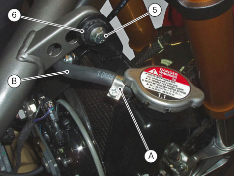

Loosen clamps (1) on the coolant hoses (2) and (3); disconnect the hoses from the unions on radiator (4).
Loosen the clamp (A) and remove the expansion reservoir-radiator hose (B). Loosen screw (5) with spacer (6) fixing the water
radiator on the right side of the frame.

Loosen screws (5) with spacer (6) fixing the radiator on the left side.
Disconnect the wiring connectors of the main wiring loom (C) from both fans.
Remove the water radiator (4) from the vehicle, by sliding it from the pin (D).
Radiator inspection
Visually inspect the oil cooler. If it shows signs of damage or leaks, the radiator must be renewed. Check also that the air
flow through the radiator core is not obstructed by leaves, insects, mud, etc.
Important
Excessive cooling temperatures can be caused by a partial obstruction of the radiator core.
Carefully check the condition of the radiator core.